1. RUDRAv4 Intent
RUDRAv4 is a ROS 2 robot from the ground up. The robot inherits hard-won mechanical, electrical, and control lessons from earlier RUDRA experiments, but the story starts here: a fresh Ubuntu 26.04 NUC, ROS 2 Lyrical, and a clean robot stack designed around ROS 2 packages, topics, launch files, and hardware bridge contracts.
| RUDRAv4 design layer | ROS 2-native decision |
|---|---|
| Operating system | Ubuntu 26.04 on the Intel NUC. |
| Robot middleware | ROS 2 Lyrical, built with colcon and ament. |
| Robot base | Teensy/Arduino firmware owns hardware timing; ROS 2 owns topics, launch, logs, and autonomy. |
| Serial boundary | A deliberate ROS 2 hardware bridge contract: custom serial packets first, micro-ROS later if it improves the design. |
| First proof of life | ros2 run rudra_core rudra_alive and /rudra/heartbeat. |
2. RUDRAv4 Build Progression
The audience should learn RUDRAv4 in the same progression as the complete RUDRA build: understand differential drive theory, choose the hardware, assemble the base, set up the NUC, bring up the base controller, publish odometry and IMU data, then layer navigation on top. The voice of this guide is direct: this is the ROS 2 robot, with ROS 2 decisions made from day one.
ros2_ws/docs/assets/. Since these are your
images, this page now uses them directly instead of showing placeholders.
Article progression, RUDRAv4 interpretation
| Progression | Explanation to preserve | RUDRAv4 implementation |
|---|---|---|
| Robot overview and mechanical platform | Show the rover first so the reader understands what the software will bring to life. | Intel NUC running Ubuntu 26.04 and ROS 2 Lyrical. |
| Electronics and controller layout | Explain modularity: the brain and the base are separated so compute can change without rebuilding the base. | NUC is the ROS 2 brain; Teensy/Arduino are hardware controllers. |
| Software setup | Install the tools before flashing firmware or running robot code. | ROS 2 Lyrical, Arduino/Teensy tooling, udev rules, and workspace overlay sourcing. |
| PS2/manual mode | Manual control is a deliberate robot mode, useful for testing and mapping. | Publish standard ROS 2 /joy or a RUDRA-specific ROS 2 interface. |
| Base control and Sabertooth | Convert /cmd_vel into wheel commands, close the loop with encoders, and stop safely on timeout. |
Teensy receives a ROS 2 bridge command packet and owns motor safety. |
| IMU and odometry | Wheel odometry and IMU each have flaws; fusion gives better state estimation. | Publish /rudra/imu/raw, /rudra/wheel_odom, and fuse with ROS 2 tools. |
| Navigation stack | Navigation only works after TF, odometry, scan data, and base control are correct. | Nav2 comes after the base stack is stable and observable. |
RUDRAv4 platform overview
Begin with the robot itself. RUDRAv4 is a differential-drive rover with an onboard Intel NUC, YDLiDAR-class 360 degree lidar, a regulated NUC power path, Teensy/Arduino base electronics, Sabertooth motor drivers, encoder feedback, and an MPU6050 IMU. The compute stack is ROS 2 from the start.
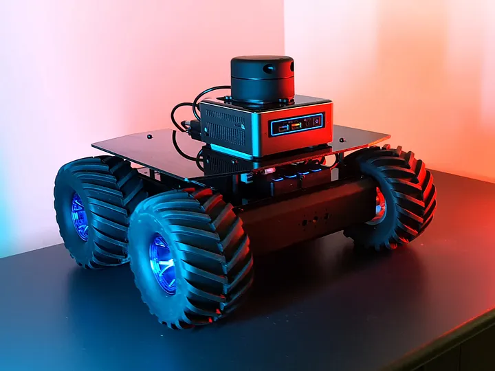
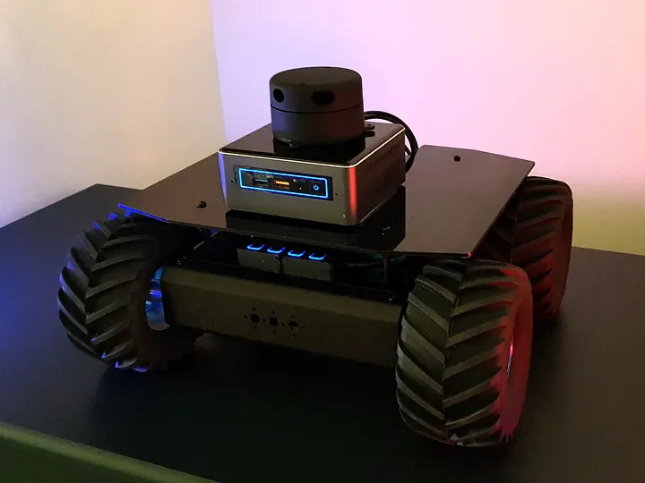
.webp)
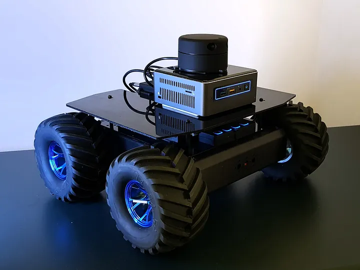
A. Theory: differential drive robots
The article builds intuition before touching ROS. RUDRA is differential drive: steering is
produced by the difference between left and right wheel velocities. The values used later in
firmware are still important in ROS 2: wheel radius 0.0675 m and wheelbase
0.29 m.
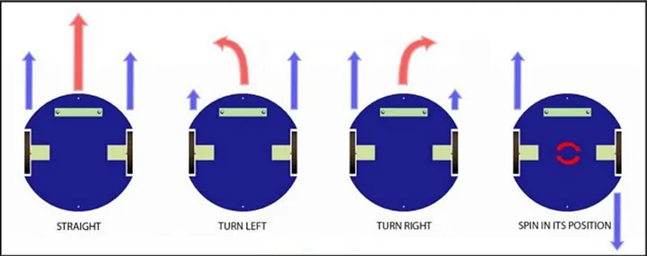
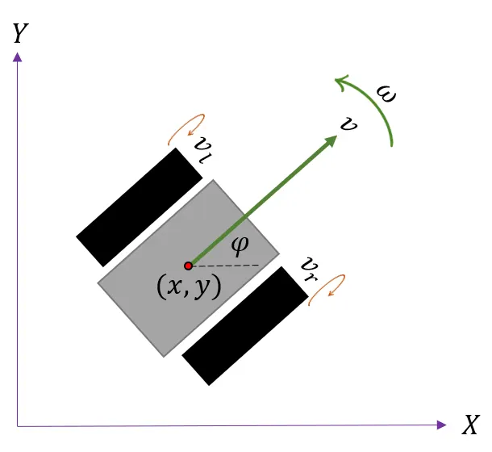
x, y, and heading.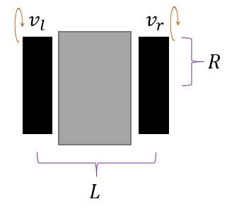
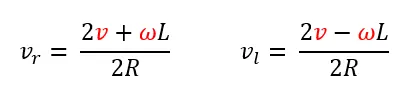
The control story then becomes: compute wheel targets, measure actual wheel motion with encoders, use PID to reduce error, compute odometry, and publish transforms.
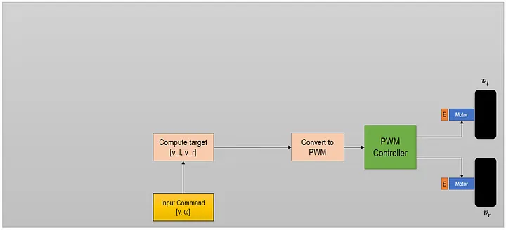
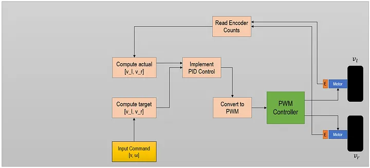
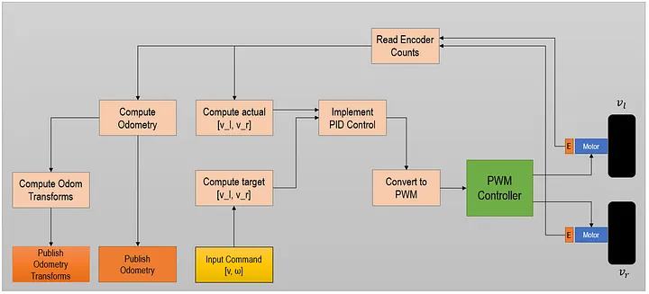
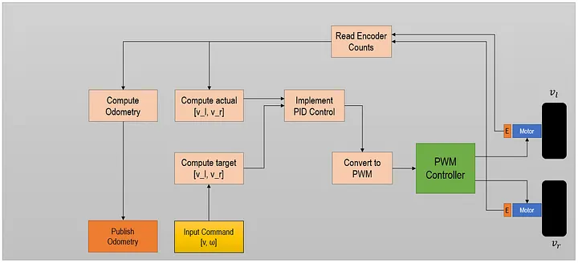
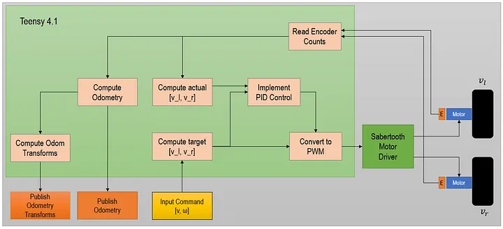
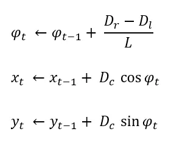
B and C. BOM, architecture, and modular hardware stack
RUDRA separates the brain from the base. The NUC runs ROS 2. The base microcontrollers own low-level hardware timing: PS2 receiver, MPU6050, encoders, and Sabertooth motor commands.
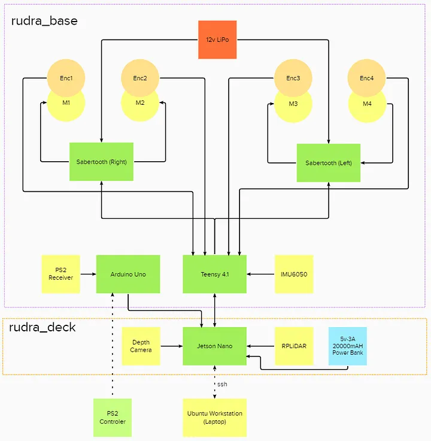
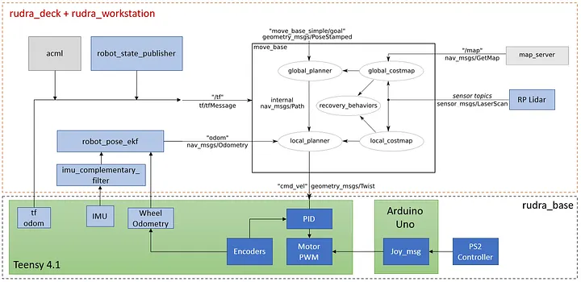
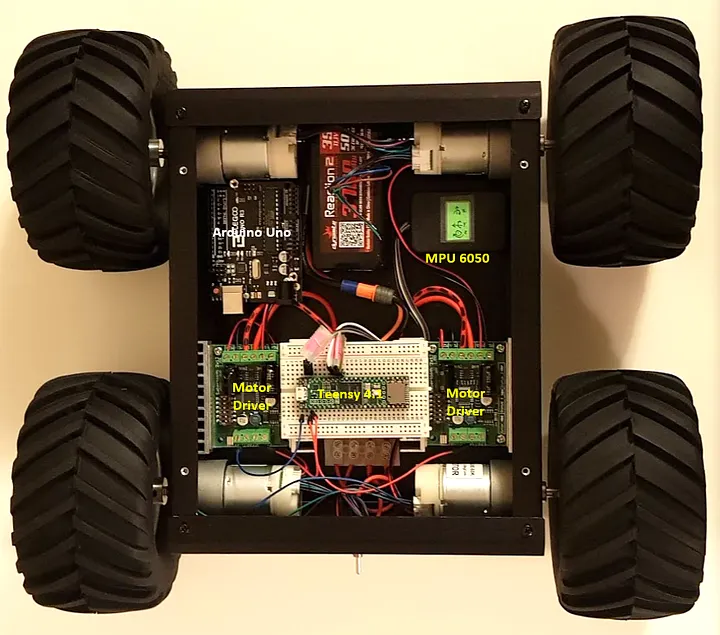
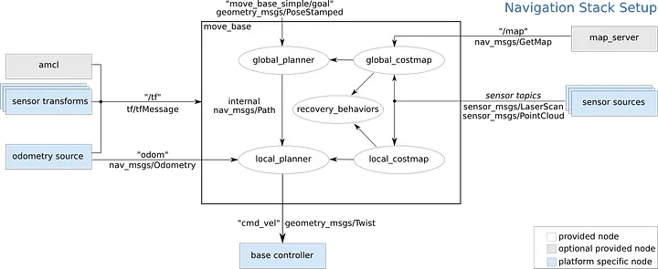
D. Software setup, now updated for the NUC
RUDRAv4 software setup starts with the NUC. Install Ubuntu, install ROS 2 Lyrical, install Arduino and Teensy tools, install udev rules, and verify the workspace before any hardware motion test. The firmware toolchain exists to support the ROS 2 robot, not the other way around.
/etc/udev/rules.d/00-teensy.rules.
E and F. Schematic, wiring, power, and batteries
These images are still directly relevant. The wiring diagram and Sabertooth setup explain why the Teensy remains the safest place to own motor timing, e-stop behavior, and encoder loops.
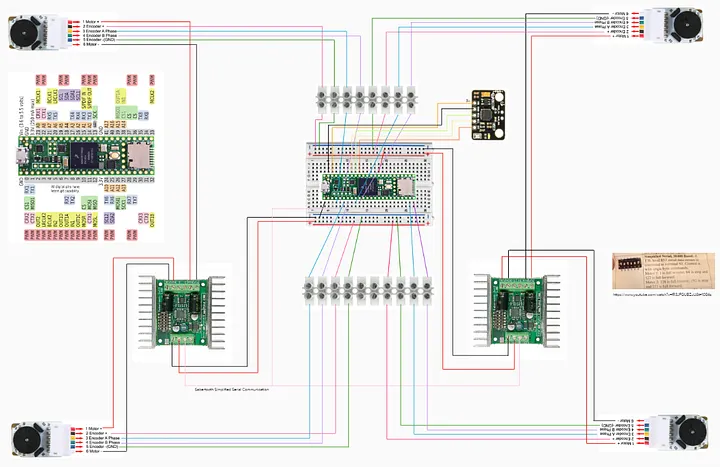
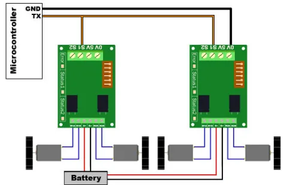
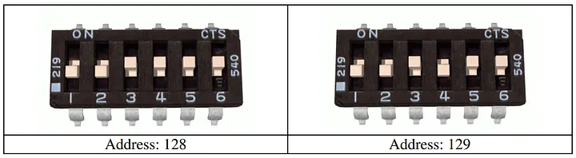
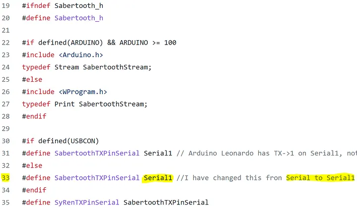
G. rudra_base hardware and software integration
The base is the contract between real hardware and ROS 2. RUDRAv4 integrates each hardware subsystem deliberately: PS2/manual control, Sabertooth motor output, encoder feedback, MPU6050 IMU data, odometry, and transforms. Each boundary is either a ROS 2 topic on the NUC or a serial packet crossing between firmware and the NUC.
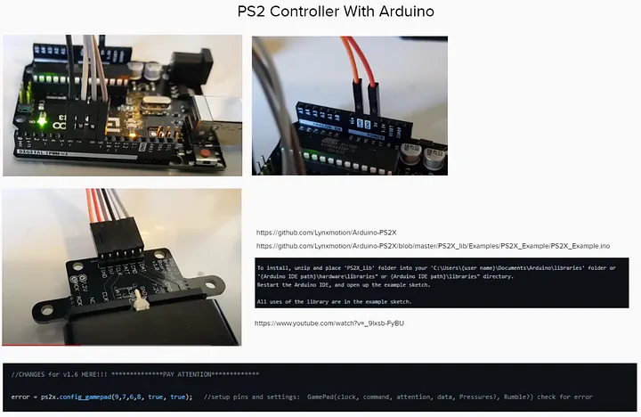
/joy.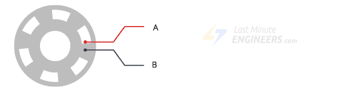
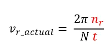
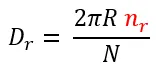
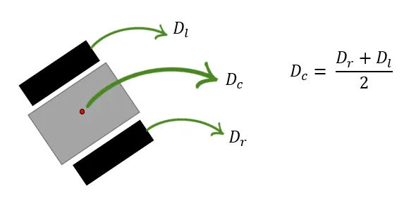
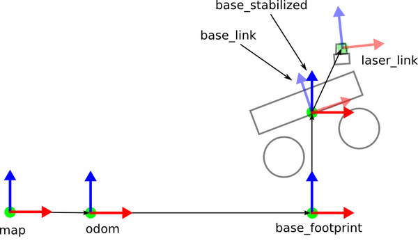
H. ROS-on-RUDRA, navigation, and coordinate frames
The ROS graph and navigation diagrams remain the right mental model. In RUDRAv4, the implementation uses ROS 2 launch files, ROS 2 package names, and the ROS 2 navigation stack. Bring up base, IMU, odom, and TF first. Add SLAM and navigation later with Nav2.
map, odom, base_link, laser, and imu_link consistent.
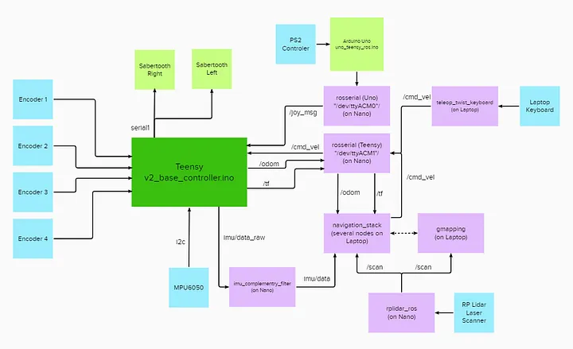
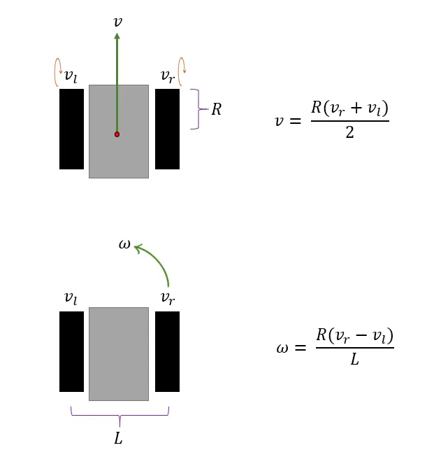
.webp)
H1. ROS 2 setup for RUDRAv4
RUDRAv4 uses the same conceptual layers as the full rover article: a workstation, an onboard computer, a base controller, sensors, and navigation. The ROS 2 interpretation is simpler to explain because there is no master process. Every RUDRAv4 machine joins the same ROS domain, discovers peers on the robot subnet, and communicates through typed topics, services, actions, parameters, and transforms.
| Robot responsibility | RUDRAv4 ROS 2 expression |
|---|---|
| Manual driving | /joy and /cmd_vel, generated from PS2/manual mode or keyboard teleop. |
| Base control | rudra_hw_bridge translates ROS 2 velocity commands into serial packets. |
| Wheel odometry | Teensy encoder telemetry becomes /rudra/wheel_odom. |
| IMU | MPU6050 telemetry becomes /rudra/imu/raw, then filtered IMU data. |
| Lidar | The lidar driver publishes /scan in the laser frame. |
| Robot model | URDF/Xacro plus robot_state_publisher define static transforms. |
| Autonomy | Nav2 consumes map, scan, TF, odometry, and goals, then publishes /cmd_vel. |
H2. Coordinate frames
RUDRAv4 should teach frames before navigation. The map frame is the global
navigation reference. The odom frame is locally continuous and starts where the
robot begins. The base_link frame moves with the robot body. The
laser and imu_link frames are fixed to the body because those sensors are
physically mounted on the rover.
| Transform | Publisher | Why it matters |
|---|---|---|
base_link -> laser |
robot_state_publisher from URDF |
Lidar scans must be located on the robot body. |
base_link -> imu_link |
robot_state_publisher from URDF |
IMU orientation and acceleration need a known mounting frame. |
odom -> base_link |
Wheel odometry or fused odometry node | Local motion must be continuous for controllers and navigation. |
map -> odom |
SLAM or localization | The global map can correct drift without breaking local odometry continuity. |
RUDRA stays on the ground, so a separate base_footprint frame is optional. If
you add one, keep the tree consistent and do not publish competing transforms for the same
parent/child pair.
H3. RUDRA Tandav: first full-system bring-up
The first dance is not autonomy. It is a controlled proof that the ROS 2 graph, serial bridge, firmware, motor timeout, manual override, odometry, IMU, and TF all agree. Start with the wheels lifted, then repeat at low speed on the floor.
# Terminal 1: robot core
source ~/.bashrc
ros2 launch rudra_bringup base_no_lidar.launch.py
# Terminal 2: keyboard teleop
source ~/.bashrc
ros2 run teleop_twist_keyboard teleop_twist_keyboard
# Terminal 3: observe the graph
source ~/.bashrc
ros2 topic list
ros2 topic echo /rudra/base_status
ros2 run tf2_tools view_frames
The PS2 controller remains a manual override mode. Pressing the selected mode button should
switch the base from autonomous /cmd_vel to manual joystick control, and pressing
it again should return the base to ROS 2 velocity commands. In every mode, timeout and
emergency-stop behavior stay active.
H4. SLAM and navigation
SLAM and navigation come after the base is boringly reliable. The RUDRAv4 stack needs a
stable /scan, correct static transforms, continuous odom -> base_link,
a filtered odometry estimate, and a safe /cmd_vel path before Nav2 is allowed to
drive the rover.
- Verify lidar scan direction and frame in RViz.
- Verify
robot_state_publisherproducesbase_link -> laserandbase_link -> imu_link. - Verify wheel odometry signs by pushing or commanding the rover forward slowly.
- Run IMU filtering and check that yaw changes in the expected direction.
- Fuse wheel odometry and IMU with
robot_localization. - Run SLAM to build and save a map.
- Run Nav2 localization against the saved map.
- Send a short goal only after local costmaps and obstacle inflation look correct.
I. RUDRAv4 NUC setup
This page adds the repeatable RUDRAv4 NUC rebuild path: install Ubuntu 26.04, install ROS
2 Lyrical, source the workspace correctly, build rudra_core, verify
/rudra/heartbeat, install udev rules, and then bring up the serial bridge layer
one device at a time.
3. Assumptions
This guide assumes the NUC starts from a clean Ubuntu 26.04 install with no ROS workspace,
no Python development packages, no serial libraries, and no Arduino/Teensy permissions.
Ubuntu usually includes a Python interpreter, but do not rely on a fresh install having
pip, venv, headers, build tools, or ROS tooling.
Recommended disk layout
/home/rudra/
Projects/
RUDRA/
RUDRAv4/
ros2_ws/
src/
docs/
build/ # generated
install/ # generated
log/ # generatedRobot network names
rudra: robot NUC, onboard computer.aghora: development/control laptop.rudra.local: mDNS name afteravahi-daemonis enabled.
4. Install Ubuntu 26.04 on the NUC
- Install Ubuntu 26.04 Desktop or Server. Desktop is easier when using RViz, Arduino IDE, and VS Code locally.
- Create the user
rudra. - Set the computer name to
rudra. - Connect to a reliable network before installing ROS packages.
- After first boot, open a terminal and run the bootstrap commands below.
Set host name if needed
sudo hostnamectl set-hostname rudra
hostnamectl
cat /etc/hostnameEnable update repositories
sudo apt update
sudo apt upgrade -y
sudo apt install -y software-properties-common
sudo add-apt-repository universe5. Bootstrap Linux Tools
Install the base system tools explicitly. This section is intentionally broad because the starting point is a clean OS with no development stack assumed.
sudo apt update
sudo apt install -y \
build-essential cmake pkg-config \
git curl wget gnupg ca-certificates lsb-release \
locales software-properties-common \
python3 python3-dev python3-pip python3-venv python3-setuptools python3-wheel \
usbutils pciutils net-tools iproute2 \
udev openssh-server avahi-daemon \
terminatorLocale
ROS 2 expects a UTF-8 capable locale. Configure it before adding ROS repositories.
locale
sudo locale-gen en_US en_US.UTF-8
sudo update-locale LC_ALL=en_US.UTF-8 LANG=en_US.UTF-8
export LANG=en_US.UTF-8
localePython sanity check
python3 --version
python3 -m pip --version
python3 -m venv /tmp/rudra_venv_check
rm -rf /tmp/rudra_venv_checkOptional editor
For VS Code, Microsoft documents both Debian package and Snap installation paths. The quick path is:
sudo snap install --classic code6. Install ROS 2 Lyrical
ROS 2 Lyrical provides binary Debian packages for Ubuntu 26.04. For the robot NUC,
ros-lyrical-desktop is convenient because it includes RViz and demos. If the NUC
must stay lean, use ros-lyrical-ros-base and install visualization tools on the laptop.
Add the official ROS 2 apt source
sudo apt update
sudo apt install -y curl
export ROS_APT_SOURCE_VERSION=$(curl -s https://api.github.com/repos/ros-infrastructure/ros-apt-source/releases/latest | grep -F "tag_name" | awk -F'"' '{print $4}')
curl -L -o /tmp/ros2-apt-source.deb \
"https://github.com/ros-infrastructure/ros-apt-source/releases/download/${ROS_APT_SOURCE_VERSION}/ros2-apt-source_${ROS_APT_SOURCE_VERSION}.$(. /etc/os-release && echo ${UBUNTU_CODENAME:-${VERSION_CODENAME}})_all.deb"
sudo dpkg -i /tmp/ros2-apt-source.debInstall ROS 2 and development tools
sudo apt update
sudo apt upgrade -y
sudo apt install -y \
ros-lyrical-desktop \
ros-dev-tools \
python3-colcon-common-extensions \
python3-rosdep \
python3-vcstoolInstall RUDRA-useful ROS packages
sudo apt install -y \
ros-lyrical-rmw-fastrtps-cpp \
ros-lyrical-rmw-cyclonedds-cpp \
ros-lyrical-robot-state-publisher \
ros-lyrical-joint-state-publisher-gui \
ros-lyrical-xacro \
ros-lyrical-tf2-tools \
ros-lyrical-teleop-twist-keyboard \
ros-lyrical-teleop-twist-joy \
ros-lyrical-joy \
ros-lyrical-joy-linux \
ros-lyrical-imu-tools \
ros-lyrical-imu-filter-madgwick \
ros-lyrical-imu-complementary-filter \
ros-lyrical-rviz-imu-plugin \
ros-lyrical-robot-localization \
ros-lyrical-swri-serial-util \
libcxx-serial-dev \
libserialport-dev \
python3-serialInitialize rosdep
sudo rosdep init || true
rosdep updateVerify ROS itself
source /opt/ros/lyrical/setup.bash
echo "ROS_DISTRO=$ROS_DISTRO"
which ros2
ros2 --help
ros2 doctor --reportros2 command does not provide a global --version
flag. Use echo "$ROS_DISTRO", which ros2, package versions from
apt policy, and ros2 doctor --report to confirm the install.
ros2 run demo_nodes_cpp talker in one and
ros2 run demo_nodes_py listener in the other.
7. Get the RUDRA Workspace
The current RUDRAv4 source tree uses a ROS 2 workspace under ros2_ws. Clone it into
the expected location so scripts and shell aliases stay simple.
Create project folders
mkdir -p ~/Projects/RUDRA
cd ~/Projects/RUDRAClone the repo
# Preferred if your GitHub SSH key is configured:
git clone git@github.com:AdarshGouda/RUDRAv4.git
# HTTPS fallback:
# git clone https://github.com/AdarshGouda/RUDRAv4.git
cd ~/Projects/RUDRA/RUDRAv4/ros2_wsExpected package
The first ROS 2 package in this workspace is rudra_core, an ament_python package.
ros2_ws/src/rudra_core/
package.xml
setup.py
rudra_core/
rudra_alive.py8. Shell Environment
Every terminal should source ROS 2 first, then the RUDRA overlay workspace. Add this block
at the bottom of ~/.bashrc.
# RUDRA ROS 2 environment
export RUDRA_WS="$HOME/Projects/RUDRA/RUDRAv4/ros2_ws"
# Drop stale overlays before sourcing the RUDRA workspace.
unset COLCON_PREFIX_PATH
if [ -f /opt/ros/lyrical/setup.bash ]; then
source /opt/ros/lyrical/setup.bash
fi
if [ -f "$RUDRA_WS/install/setup.bash" ]; then
source "$RUDRA_WS/install/setup.bash"
fi
export ROS_DOMAIN_ID=42
export ROS_AUTOMATIC_DISCOVERY_RANGE=SUBNET
export RMW_IMPLEMENTATION=rmw_fastrtps_cpp
# RUDRA workspace helpers
alias gs="git status"
alias cw="cd $RUDRA_WS"
alias cs="cd $RUDRA_WS/src"
alias cb="cd $RUDRA_WS && colcon build --symlink-install"
alias ports="ls /dev/ttyUSB* /dev/ttyACM* 2>/dev/null"
alias serialids="ls -l /dev/serial/by-id 2>/dev/null"
alias usbwatch="dmesg -w"
alias rudra_ws="cd $RUDRA_WS"
alias rudra_src="cd $RUDRA_WS/src"
alias rosenv="printenv | grep -E 'ROS|RMW|RUDRA'"Load it now
source ~/.bashrc
rosenvExpected environment values
ROS_DISTRO=lyrical
ROS_DOMAIN_ID=42
RMW_IMPLEMENTATION=rmw_fastrtps_cpp
RUDRA_WS=/home/rudra/Projects/RUDRA/RUDRAv4/ros2_ws9. Build and Test the RUDRA Workspace
Use rosdep before every first build on a fresh machine. It reads each package's
package.xml and asks apt to install the missing system dependencies.
cd ~/Projects/RUDRA/RUDRAv4/ros2_ws
source /opt/ros/lyrical/setup.bash
rosdep install --from-paths src --ignore-src -r -y
colcon build --symlink-install
source install/setup.bashRun the RUDRA heartbeat node
ros2 run rudra_core rudra_aliveIn another terminal:
source ~/.bashrc
ros2 topic list
ros2 topic echo /rudra/heartbeatRun tests
cd ~/Projects/RUDRA/RUDRAv4/ros2_ws
colcon test --event-handlers console_direct+
colcon test-result --verbose/rudra/heartbeat increments once per second, the NUC has ROS 2, Python,
the workspace overlay, and the rudra_core entry point working together.
10. Teensy and Serial Setup
RUDRA hardware talks to the NUC through USB serial devices such as Teensy or Arduino-class controllers. A fresh Linux install needs udev rules and user group membership before non-root processes can open those devices reliably.
User groups
sudo usermod -aG dialout,plugdev rudra
groups rudraLog out and back in after changing groups.
Install Teensy udev rules
Use the official PJRC rules file when possible. This repository also has a local
00-teensy.rules file at the repo root if you want a pinned copy.
# Official live copy:
curl -L -o /tmp/00-teensy.rules https://www.pjrc.com/teensy/00-teensy.rules
sudo install -m 0644 /tmp/00-teensy.rules /etc/udev/rules.d/00-teensy.rules
# Repo-pinned copy, if present:
# sudo install -m 0644 ~/Projects/RUDRA/RUDRAv4/00-teensy.rules /etc/udev/rules.d/00-teensy.rules
sudo udevadm control --reload-rules
sudo udevadm triggerUnplug and reconnect the Teensy after installing the rule.
Install Arduino CLI
sudo apt install -y arduino-cli
arduino-cli version
arduino-cli config initAdd Teensy board support to Arduino tooling
arduino-cli config add board_manager.additional_urls https://www.pjrc.com/teensy/package_teensy_index.json
arduino-cli core update-index
arduino-cli core search teensyIdentify serial devices
lsusb
ls /dev/ttyUSB* /dev/ttyACM* 2>/dev/null
ls -l /dev/serial/by-id 2>/dev/null
dmesg -wROS 2 serial options
| Option | Use when | NUC-side packages |
|---|---|---|
| Plain serial bridge node | The microcontroller sends simple packets, CSV, binary frames, or line-delimited data. | pyserial, libserialport-dev, or libcxx-serial-dev |
swri_serial_util |
You want ROS 2 utilities around serial communication. | ros-lyrical-swri-serial-util |
| micro-ROS | The Teensy/MCU should participate in ROS 2 using rclc-style APIs. | ros-lyrical-rclc, micro-ROS Arduino library, micro-ROS agent if available for the platform. |
rosserial_arduino Arduino libraries. Keep the
microcontroller firmware as firmware, and connect it to ROS 2 through a deliberate serial
bridge or micro-ROS agent.
11. RUDRAv4 Electronics: What Runs Where
RUDRAv4 keeps the robot modular: the NUC is the ROS 2 brain, while the microcontrollers handle pins, timing, encoders, motor-driver serial, and immediate safety behavior. The folders below are engineering references for that design: source material used to write clean ROS 2 firmware and bridge nodes for RUDRAv4.
Reference folders used to design RUDRAv4
| Folder or file | What it teaches us | RUDRAv4 implementation |
|---|---|---|
uno-teensy-ros_AD/ |
How the PS2 receiver maps sticks and SELECT/manual mode. | UNO publishes joystick state as serial packets or the NUC publishes standard ROS 2 /joy. |
v2_base_controler_AE/ |
The physical base loop: velocity commands, manual commands, Sabertooth output, encoders, IMU, odometry. | Teensy firmware keeps the real-time base loop and exchanges packets with a ROS 2 bridge. |
v2_Sabertooth_ROS_cmd_vel/ |
Sabertooth addressing, speed mapping, and timeout behavior. | Use the same safety ideas in the RUDRAv4 base firmware. |
IMU-Teensy/ and MPU6050/ |
MPU6050 sensor access, scaling, and calibration approach. | Publish raw IMU data to ROS 2 as /rudra/imu/raw. |
PS2X_lib/ |
PS2 wireless controller protocol support. | Use only if the PS2 receiver remains wired to Arduino/Teensy. |
Sabertooth/ |
Packetized serial control of the Sabertooth motor drivers. | Teensy commands the Sabertooth drivers; the NUC sends safe high-level velocity commands. |
ROS/rudra/ |
Topic intent: joystick command, serial devices, robot description, odom, IMU, TF. | Create ROS 2 interfaces and launch files that express the same robot responsibilities cleanly. |
RUDRAv4 ROS 2 data flow
PS2 controller
-> Arduino UNO or direct Linux joystick input
-> rudra_hw_bridge or ROS 2 joy_node
-> /joy type: sensor_msgs/Joy
NUC teleop / Nav2 / autonomy
-> /cmd_vel type: geometry_msgs/Twist
/joy + /cmd_vel
-> rudra_hw_bridge
-> CMD packets to Teensy
-> Sabertooth address 128, motors 1 and 2
-> Sabertooth address 129, motors 1 and 2
-> wheel encoders
-> ODOM packets to NUC
-> /rudra/wheel_odom type: nav_msgs/Odometry
-> IMU packets to NUC
-> /rudra/imu/raw type: sensor_msgs/Imu
-> /tf odom -> base_linkFirmware communication choices
Option A: Keep microcontrollers as hardware controllers
PS2 / encoders / MPU6050 / Sabertooth
-> Arduino/Teensy firmware with a simple serial protocol
-> rudra_hw_bridge ROS 2 node on the NUC
-> /joy, /rudra/imu/raw, /rudra/wheel_odom, /cmd_vel_safe
Option B: Make the Teensy a micro-ROS node
PS2 / encoders / MPU6050 / Sabertooth
-> micro-ROS firmware
-> micro-ROS agent on the NUC
-> normal ROS 2 topics directlyRecommended decision for the first RUDRAv4 bring-up
Start with Option A: custom serial bridge. It is easier to debug on a fresh NUC, keeps firmware simple, and lets RUDRA move one subsystem at a time. After the base is stable, micro-ROS can be evaluated as a cleaner long-term firmware architecture.
| Question | Answer for first ROS 2 bring-up |
|---|---|
| Should UNO read PS2? | Yes, if the PS2 receiver is wired to UNO. It should output defined JOY packets. |
| Should Teensy still command Sabertooth? | Yes. Keep hard real-time motor, encoder, and timeout behavior on Teensy. |
| Where should ROS 2 run? | On the NUC. It translates serial packets to ROS 2 topics and ROS 2 commands back to serial packets. |
| Where should MPU6050 be read? | On Teensy using the existing I2Cdev/MPU6050 library, then publish raw IMU fields to the NUC. |
| How should the article images be used? | Use them as RUDRAv4 teaching figures: theory, wiring, hardware layout, base integration, and navigation. |
UNO: PS2 controller reader
In RUDRAv4, the UNO can remain a small input controller for the PS2 receiver. The reference sketch configures the receiver with:
ps2x.config_gamepad(9, 7, 6, 8, true, true);
The useful fields are SELECT, Ry, Rx, Ly, and Lx.
RUDRAv4 should expose these as standard ROS 2 joystick semantics whenever possible:
time head
bool SELECT
int32 Ry
int32 Rx
int32 Ly
int32 LxChoose one ROS 2 representation:
sensor_msgs/msg/Joyif you want to use standard ROS 2 joystick tooling.- A new ROS 2
rudra_interfaces/msg/RudraJoyif the exact RUDRA fields matter. - A plain serial line that the NUC converts into
/joy.
Recommended UNO serial packet
JOY,stamp_ms,select,lx,ly,rx,ry
JOY,185020,1,128,221,130,127
That gives the NUC enough information to publish /joy and preserve the
manual-mode toggle from SELECT.
Teensy/base controller: Sabertooth, encoders, IMU
The RUDRAv4 base controller has four jobs: receive velocity commands, receive manual joystick commands, read four encoders, and read the MPU6050. It also drives two Sabertooth controllers:
Sabertooth STRight(128), STLeft(129);Physical constants:
| Constant | Value | Meaning |
|---|---|---|
radius |
0.0675 m |
Wheel radius. |
wheelbase |
0.29 m |
Distance between left and right wheel contact centers. |
encoder_cpr |
1683 |
Experimental encoder counts per wheel revolution. |
LOOPTIME |
100 ms |
Base control loop period, approximately 10 Hz. |
noCommLoopMax |
10 |
Stop motors after about one second without commands. |
Recommended Teensy command packet from NUC
CMD,stamp_ms,mode,linear_x,angular_z
CMD,185030,AUTO,0.20,0.00
CMD,185130,MANUAL,0.00,0.00
The Teensy should map linear_x and angular_z using the same differential
equations already in the sketch:
speed_req_left = linear_x - angular_z * (wheelbase / 2)
speed_req_right = linear_x + angular_z * (wheelbase / 2)Recommended Teensy telemetry packets to NUC
ODOM,stamp_ms,x,y,theta,vx,vth,left_mps,right_mps
ODOM,185040,0.125,0.000,0.010,0.201,0.020,0.198,0.204
IMU,stamp_ms,gx,gy,gz,ax,ay,az
IMU,185041,0.001,-0.002,0.003,0.12,-0.05,9.78
STAT,stamp_ms,manual_mode,no_comm_loops,estop,battery_mv
STAT,185050,0,0,0,24600The NUC-side ROS 2 bridge should publish:
| Serial packet | ROS 2 topic | ROS 2 type |
|---|---|---|
JOY |
/joy |
sensor_msgs/msg/Joy |
IMU |
/rudra/imu/raw |
sensor_msgs/msg/Imu |
ODOM |
/rudra/wheel_odom |
nav_msgs/msg/Odometry |
STAT |
/rudra/base_status |
Custom rudra_interfaces/msg/BaseStatus or diagnostic messages. |
ROS 2 /cmd_vel |
Serial CMD to Teensy |
geometry_msgs/msg/Twist becomes a serial command. |
MPU6050 and ROS 2 IMU tools
The firmware already converts MPU6050 raw values using ACCEL_SCALE,
GYRO_SCALE, and G_TO_ACCEL. Keep that conversion on the Teensy or move it
to the NUC, but do it in exactly one place. The ROS 2 side should install:
sudo apt install -y \
ros-lyrical-imu-tools \
ros-lyrical-imu-filter-madgwick \
ros-lyrical-imu-complementary-filter \
ros-lyrical-rviz-imu-plugin \
ros-lyrical-robot-localizationTopic contract:
/rudra/imu/raw sensor_msgs/msg/Imu from serial bridge
/rudra/imu/data sensor_msgs/msg/Imu from imu_filter_madgwick or complementary filter
/odometry/filtered nav_msgs/msg/Odometry from robot_localization
RUDRAv4 should define imu_link fixed relative to base_link. The reference
geometry uses xyz="0.05 -0.07 0.0"; verify the physical mounting before freezing
this in the ROS 2 description package.
Sabertooth bring-up
Keep the Sabertooth library on the Teensy side for first bring-up. The ROS 2 NUC should not directly talk to Sabertooth until the base bridge is stable. Use the existing library and address pattern, verify DIP-switch/address setup, and start with all wheels lifted.
- Motor command range remains
-127to127. - Right controller address is
128; left controller address is129. - Command timeout must stop all four motors.
- PID integral must reset when the base stops to avoid wind-up.
- Manual mode must never bypass emergency stop or command timeout.
What not to do
- Do not use generated
rosserial_arduinolibraries in the RUDRAv4 workflow. - Do not invent custom interfaces unless standard ROS 2 messages cannot express the data cleanly.
- Do not hard-code
/dev/ttyACM0and/dev/ttyACM1long term. Use/dev/serial/by-id. - Do not connect
/cmd_velto motor output until timeout, zero command, and e-stop behavior are proven.
Bring-up order that will not make your future self suffer
- Verify Teensy and UNO appear under
/dev/serial/by-id. - Flash a minimal UNO sketch that prints
JOYpackets. Confirm withserial monitororcat. - Flash a minimal Teensy sketch that prints
IMUandODOMpackets without driving motors. - Write the NUC ROS 2 bridge that turns those packets into
/joy,/rudra/imu/raw, and/rudra/wheel_odom. - Run IMU filtering and check orientation in RViz.
- With wheels lifted, allow the bridge to send
CMDpackets to Teensy. - Only after command signs and timeout behavior are correct, test on the floor at low speed.
12. SSH and Networking
The control laptop should reach the NUC over SSH, and ROS 2 discovery should stay on the
robot subnet. Keep the same ROS_DOMAIN_ID on every RUDRA machine.
Enable SSH on the NUC
sudo apt install -y openssh-server avahi-daemon
sudo systemctl enable --now ssh
sudo systemctl enable --now avahi-daemon
systemctl status ssh --no-pager
hostname -IAllow SSH through firewall, if UFW is enabled
sudo ufw status
sudo ufw allow OpenSSHFrom Aghora laptop
ssh rudra@rudra.localOptional laptop-side ~/.ssh/config entry:
Host rudra
HostName rudra.local
User rudra
IdentityFile ~/.ssh/id_ed25519ROS 2 multi-machine check
On the NUC:
source ~/.bashrc
ros2 run rudra_core rudra_aliveOn Aghora, with ROS 2 Lyrical installed and matching environment variables:
export ROS_DOMAIN_ID=42
export ROS_AUTOMATIC_DISCOVERY_RANGE=SUBNET
export RMW_IMPLEMENTATION=rmw_fastrtps_cpp
ros2 topic echo /rudra/heartbeat13. Optional Boot Services
During development, run nodes manually in a terminal. Once a node is stable, create a user-level systemd service so it starts when the NUC boots.
Example: heartbeat service
mkdir -p ~/.config/systemd/user
cat > ~/.config/systemd/user/rudra-alive.service <<'SERVICE'
[Unit]
Description=RUDRA ROS 2 heartbeat node
After=network-online.target
[Service]
Type=simple
ExecStart=/bin/bash -lc 'source /opt/ros/lyrical/setup.bash && source "$HOME/Projects/RUDRA/RUDRAv4/ros2_ws/install/setup.bash" && exec ros2 run rudra_core rudra_alive'
Restart=on-failure
RestartSec=2
[Install]
WantedBy=default.target
SERVICE
systemctl --user daemon-reload
systemctl --user enable --now rudra-alive.service
systemctl --user status rudra-alive.service --no-pagerKeep user services alive after logout
sudo loginctl enable-linger rudra14. Troubleshooting
ros2 command not found
source /opt/ros/lyrical/setup.bash
echo 'source /opt/ros/lyrical/setup.bash' >> ~/.bashrcWorkspace package not found
If ros2 pkg prefix rudra_core prints Package not found, the current
terminal does not have the RUDRA overlay sourced. Source the workspace setup file, or
source ~/.bashrc after confirming it contains the RUDRA block.
source /opt/ros/lyrical/setup.bash
source ~/Projects/RUDRA/RUDRAv4/ros2_ws/install/setup.bash
ros2 pkg prefix rudra_core
ros2 pkg executables rudra_coreIf the package is still missing, rebuild the workspace from a clean ROS environment:
cd ~/Projects/RUDRA/RUDRAv4/ros2_ws
unset COLCON_PREFIX_PATH
source /opt/ros/lyrical/setup.bash
colcon build --symlink-install
source install/setup.bash
ros2 pkg list | grep rudra_coreSerial port permission denied
groups
sudo usermod -aG dialout,plugdev rudra
sudo udevadm control --reload-rules
sudo udevadm triggerThen log out and back in, and physically reconnect the board.
No /dev/ttyACM0 appears
lsusb
dmesg | tail -n 80
ls -l /dev/serial/by-id 2>/dev/nullSome Teensy sketches only expose USB serial when the firmware is built with a USB serial mode. Also check cable quality: many USB cables provide power but no data lines.
ROS 2 machines cannot see each other
printenv | grep -E 'ROS_DOMAIN_ID|ROS_AUTOMATIC_DISCOVERY_RANGE|RMW_IMPLEMENTATION'
ip addr
ping rudra.local
ros2 multicast receiveIn another terminal on the other machine:
ros2 multicast sendapt cannot find ROS packages
. /etc/os-release
echo "$VERSION_ID $VERSION_CODENAME $UBUNTU_CODENAME"
apt-cache policy ros-lyrical-desktop
sudo apt updateQuick health report
source ~/.bashrc
ros2 doctor --report
ros2 pkg prefix rudra_core
ros2 topic list15. References
- Source RUDRA NUC Setup reference by Adarsh Gouda
- Source RUDRA system article: Invoking the RUDRA ROS-Unified Differential-drive Remote-mode Autonomous-rover
- Adarsh Gouda Medium index with RUDRA articles
- Lambda Stack source-article reference
- RUDRA hardware BOM reference
- JetsonHacksNano Arduino IDE installer
- Arduino IDE 1 Linux installation source-article reference
- ROS Noetic Ubuntu installation source-article reference
- ROS 2 Lyrical installation overview
- ROS 2 Lyrical Ubuntu deb package installation
- ROS 2 colcon workspace tutorial
- ROS 2 rosdep dependency tutorial
- PJRC Teensyduino download and install
- PJRC Teensy udev rules
- PJRC Teensy Loader for Linux
- PJRC Teensy tutorial
- PJRC Encoder Library
- Arduino IDE 2 installation guide
- micro-ROS Arduino library
- ROS IMU tools source-article reference
- ROS Index: imu_tools for ROS 2
- Dimension Engineering Sabertooth 2x12 product page
- Dimension Engineering Sabertooth 2x12 User's Guide
- Dimension Engineering Sabertooth Arduino setup
- 12V gear motor with encoder spec sheet
- L298N motor driver spec sheet
- mini-box DCDC-USB intelligent DC-DC converter
- XRobots ReallyUsefulRobot RUR099 Arduino reference
- RUDRA Teensy base controller reference sketch
- RUDRA Arduino UNO PS2 reference sketch
- RUDRA MPU6050 breakout board manual reference
- I2Cdevlib MPU-6050 device reference
- Jeff Rowberg I2Cdevlib and MPU6050 Arduino libraries
- ElectroPeak Arduino UNO PS2 controller source-article reference
- ElectroPeak PS2 controller article mirror
- Arduino PS2X library for PlayStation 2 controllers
- Navigation stack source-article reference
- REP 105 coordinate frames for mobile platforms
- ROS 2 joy package
- ROS 2 teleop_twist_joy package
- Ubuntu OpenSSH server documentation
- Visual Studio Code Linux setup